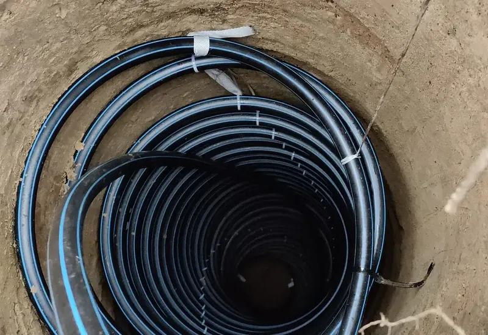

- Strona główna
- Poradnik
- Sondy koszowe DEWAX Helix
Sondy koszowe DEWAX Helix: ciepło z gruntu bez głębokiego odwiertu
Gdy wiertnica nie ma jak wjechać, sąsiad jest za blisko albo głębokość i urząd nie chcą się spotkać, dolnym źródłem może być sonda koszowa. Płycej, szerzej, na tej samej zasadzie co odwiert: glikol oddaje chłód gruntowi i wraca do pompy cieplejszy. Opisujemy, kiedy Helix ma sens, kiedy go odradzamy i jak wygląda montaż.
Czym jest sonda koszowa
Sonda koszowa to rura z tworzywa zwinięta w spiralę, która tworzy walec przypominający kosz. Zamiast schodzić na kilkadziesiąt metrów w dół jak sonda pionowa, kosz siedzi w szerokim otworze na głębokości liczonej w metrach, nie w dziesiątkach metrów. Na każdy metr głębokości przypada wielokrotnie więcej rury niż w sondzie U, więc wymiana ciepła z gruntem odbywa się na mniejszej głębokości, ale na większej powierzchni.
Zasada działania jest ta sama, co w odwiercie: glikol krąży w rurze, zimą oddaje gruntowi chłód i wraca do pompy cieplejszy, latem może oddawać gruntowi ciepło z domu. Kilka koszy łączy się równolegle i prowadzi do rozdzielacza w budynku, tak samo jak kilka otworów pionowych.
DEWAX Helix to nasza sonda koszowa, którą montujemy własnym sprzętem i własną ekipą, na tych samych zasadach co odwierty: próba szczelności przed zasypaniem, wypełnienie tak, żeby rura miała kontakt z gruntem, numery seryjne w dokumentacji. Rozwiązanie jest uznane w wytycznych branżowych dla dolnych źródeł i dobierane do konkretnych warunków gruntu, nie stosowane wszędzie.

Kiedy Helix zamiast odwiertu pionowego
Odwiert pionowy jest naszym pierwszym wyborem na małej lub zabudowanej działce, bo na powierzchni zajmuje kilka metrów kwadratowych. Są jednak sytuacje, w których głęboki otwór nie wchodzi w grę, a sonda koszowa daje wyjście:
- Wiertnica nie ma jak wjechać. Nasza HR-606S jest kompaktowa, ale potrzebuje przejazdu i placu na maszt. Gdy brama jest za wąska albo działka zabudowana tak, że nie ma gdzie postawić masztu, płytszy i szerszy otwór pod kosz da się wykonać innym sprzętem.
- Głębokość i formalności. Powyżej 30 m potrzebny jest projekt robót geologicznych i zgłoszenie do starostwa. Sondy koszowe pracują znacznie płycej, więc ten etap zwykle odpada, a z nim najdłuższe czekanie w całej inwestycji.
- Działka średnia, ale nie ogromna. Kolektor poziomy potrzebuje dużej, wolnej powierzchni, którą trzeba rozkopać. Kosze zajmują mniej terenu niż kolektor, choć więcej niż odwiert.
- Warunki, w których nie chcemy schodzić głęboko. Gdy geologia z bazy PIG-PIB pokazuje na trasie głębokiego otworu coś, czego wolimy uniknąć, płytsze źródło bywa rozsądniejsze. Wstępnie sprawdzisz to sam w DEWAX GEO.
Helix to kompromis między odwiertem a kolektorem. Nie jest lepszy ani gorszy od odwiertu, jest inny. Kto mówi, że jedna technologia pasuje do każdej działki, sprzedaje to, co ma w magazynie, nie to, czego potrzebuje Twój dom.
Kiedy Helix odradzimy
Wolimy stracić zlecenie niż sprzedać źródło, które u Ciebie nie zagra. Odradzimy sondy koszowe, gdy:
- grunt jest suchy i przepuszczalny na małej głębokości. Suche piaski i żwiry oddają mało ciepła, a płytkie źródło nie ma pod sobą warstwy wodonośnej, która ratuje sytuację w głębokim odwiercie. Wilgotna glina i grunty nawodnione pracują lepiej;
- skała zaczyna się płytko. Szeroki otwór w skale to koszt, który przekreśla sens płytkiego źródła; wtedy młotek i odwiert pionowy;
- zapotrzebowanie domu jest duże. Liczba koszy rośnie z mocą, a każdy potrzebuje miejsca i rozstawu od sąsiedniego. Przy większych domach odwierty pionowe zajmują mniej działki;
- działka jest bardzo mała i już zagospodarowana. Kilka koszy z zachowanym rozstawem to więcej rozkopanego terenu niż jeden lub dwa otwory pionowe.
Grunt wokół płytkiego źródła bardziej reaguje na pory roku niż grunt na 50 m, gdzie temperatura trzyma stałe 8–10°C. Dlatego przy Helix regeneracja latem i poprawny dobór liczby koszy do gruntu mają większe znaczenie niż przy odwiercie. Zasada jest ta sama: przeciążyć źródło można wyłącznie za małą liczbą koszy. Badania Fraunhofer ISE, cytowane przez PORT PC, wskazują niedowymiarowane dolne źródło jako pierwszy na liście błąd w instalacjach gruntowych, i nie ma znaczenia, czy źródło jest pionowe, czy koszowe.
Jak wygląda montaż sond koszowych
- Oględziny i dobór. Sprawdzamy dojazd, miejsce na kosze i ich rozstaw, trasę rur do budynku, a geologię w bazie PIG-PIB. Z mocy pobieranej z gruntu i rodzaju gruntu wynika liczba koszy.
- Otwory. Dla każdego kosza wykonujemy szeroki, płytki otwór. Ingerencja w teren jest większa niż przy odwiercie pionowym, dlatego najlepszy moment to etap przed trawnikiem i ogrodem.
- Opuszczenie kosza i próba. Kosz trafia do otworu, a przed zasypaniem sprawdzamy go pod ciśnieniem. Protokół próby dostajesz na papierze, numer seryjny sondy trafia do dokumentacji.
- Wypełnienie. Otwór wypełniamy tak, żeby rura miała kontakt z gruntem na całej wysokości kosza. Puste przestrzenie wokół rury to stracone ciepło.
- Rury i rozruch. Kosze łączymy do rozdzielacza, prowadzimy rury do kotłowni, napełniamy glikolem, odpowietrzamy i uruchamiamy z pompą.
Na koniec dostajesz to samo, co przy odwiercie: protokół próby ciśnieniowej, dokumentację powykonawczą, dokumentację zdjęciową i numery seryjne sond. Jedna umowa obejmuje źródło, pompę i uruchomienie, więc gdy coś wymaga uwagi, dzwonisz pod jeden numer.
Ile koszy potrzebuje dom
Tak samo jak przy odwiertach: nie z metrażu, tylko z mocy odbieranej z gruntu. Pompa dokłada do ciepła z ziemi część z prądu, więc z gruntu pochodzi mniej niż cała moc grzewcza; przy sprawności sezonowej 4,2 dla podłogówki to około 76%. Tę moc dzielimy przez uzysk jednego kosza w gruncie, jaki masz na działce, i stąd bierze się liczba koszy oraz zajęta powierzchnia.
Kalkulator na stronie głównej liczy odwierty pionowe, bo to najczęstszy przypadek. Daje Ci jednak dwie liczby, które nie zależą od technologii źródła: moc pompy i koszt urządzenia z montażem. Wycenę samego źródła koszowego robimy po oględzinach, z geologią działki w ręku. Ceny podajemy z osobnymi pozycjami, żebyś mógł porównać je z odwiertem i z ofertami innych firm.
Porównanie wszystkich czterech technologii, razem z kolektorem poziomym i układem woda-woda, znajdziesz na stronie dolne źródło pompy ciepła.
Krótkie odpowiedzi
Czy sonda koszowa Helix wymaga zgłoszenia do starostwa?
Formalności geologiczne zaczynają się od 30 m głębokości. Sondy koszowe montuje się znacznie płycej, więc zgłoszenie geologiczne zwykle nie jest potrzebne. Co dokładnie obowiązuje w Twojej gminie, sprawdzamy przed wyceną.
Czy Helix jest gorszy od odwiertu pionowego?
Jest inny. Pracuje płycej, więc grunt wokół niego bardziej reaguje na pory roku i dobór liczby koszy do konkretnego gruntu ma większe znaczenie. Poprawnie dobrany daje stabilne dolne źródło. Za mało koszy, tak jak za krótki odwiert, oznacza glikol schodzący coraz niżej z każdą zimą.
Czy mogę policzyć Helix w kalkulatorze na stronie?
Kalkulator liczy odwierty pionowe, bo to najczęstszy wybór na małej działce. Liczbę koszy Helix dobieramy po oględzinach, z mocy pobieranej z gruntu i rodzaju gruntu na Twojej działce. Kalkulator daje Ci jednak moc pompy i orientacyjny koszt urządzenia z montażem, a to się nie zmienia.
Czy dotacje obejmują pompę z sondami koszowymi?
Programy dotyczą gruntowej pompy ciepła z dolnym źródłem, bez wskazywania technologii źródła. Warunki, kwoty i terminy opisujemy na stronie o dotacjach; przy wycenie sprawdzamy aktualne zasady i wpis urządzenia na listę ZUM.
Nie wiesz, czy u Ciebie odwiert, czy Helix?
Policz moc i koszt pompy w kalkulatorze, a technologię dolnego źródła dobierzemy do Twojej działki na oględzinach. Najpierw technologia, potem wycena, nigdy odwrotnie.
Pon.–pt. 8:00–16:00. Wolisz napisać? Formularz dokładnej wyceny: odpisujemy w jeden dzień roboczy, telefon nie jest wymagany.
Czytaj dalej
Odwierty pod pompę ciepła
Ile otworów, jak głębokich, co dzieje się na działce w dniu wiercenia i co zostaje po nas.
Dolne źródło pompy ciepła
Cztery technologie, dobór długości z mocy i geologii, wypełnienie i szczelność.
Gruntowa czy powietrzna
Porównanie na tych samych danych i lista sytuacji, w których gruntową odradzamy.